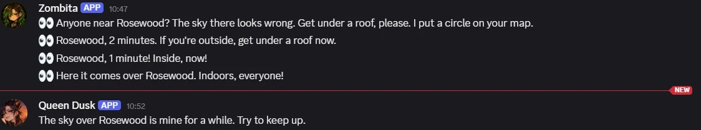
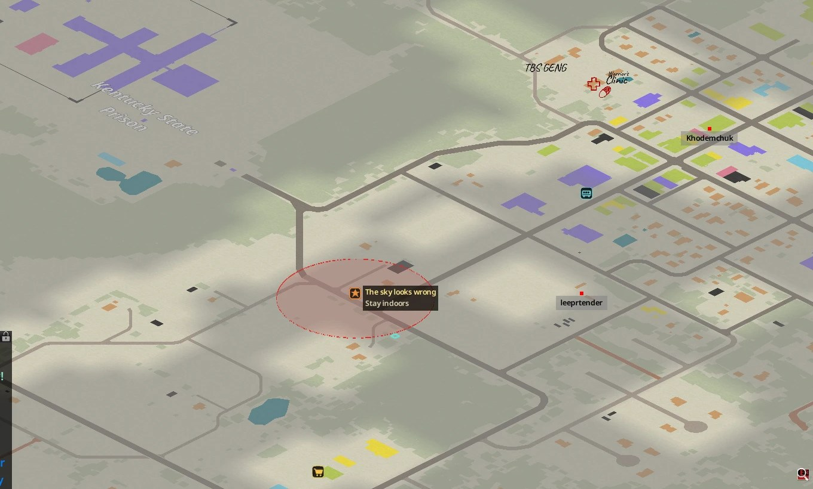
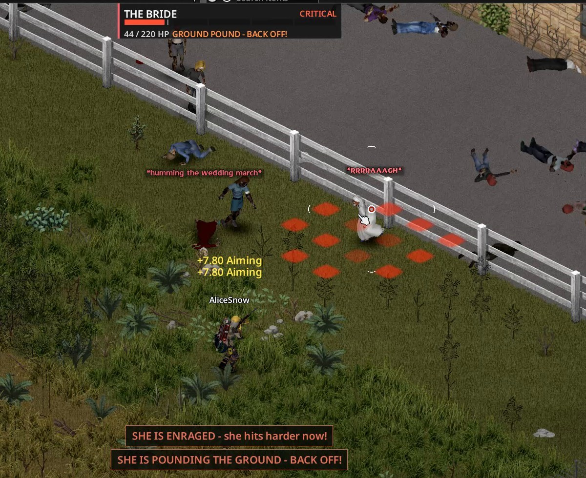
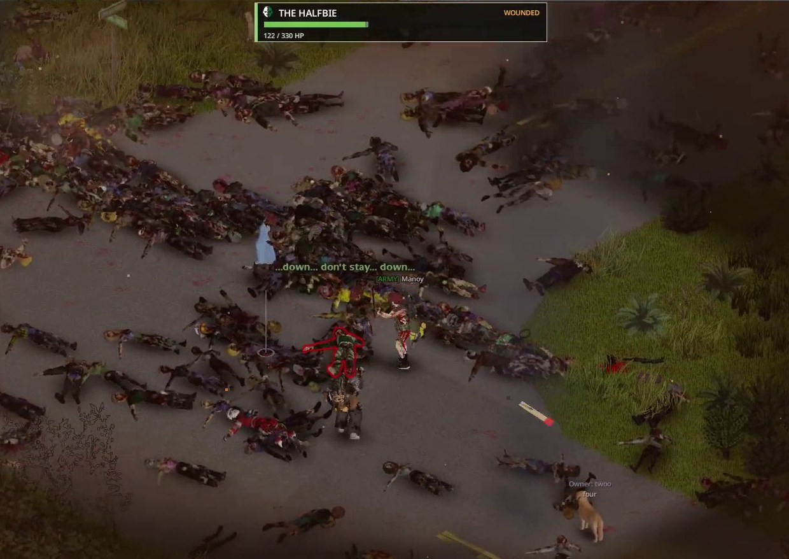
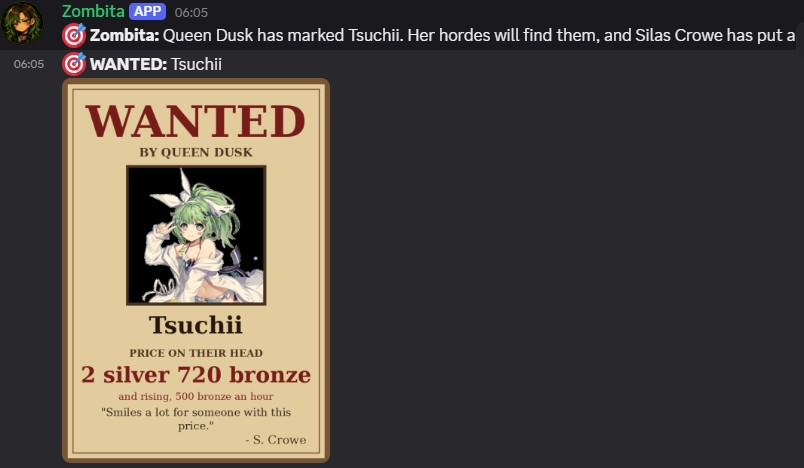
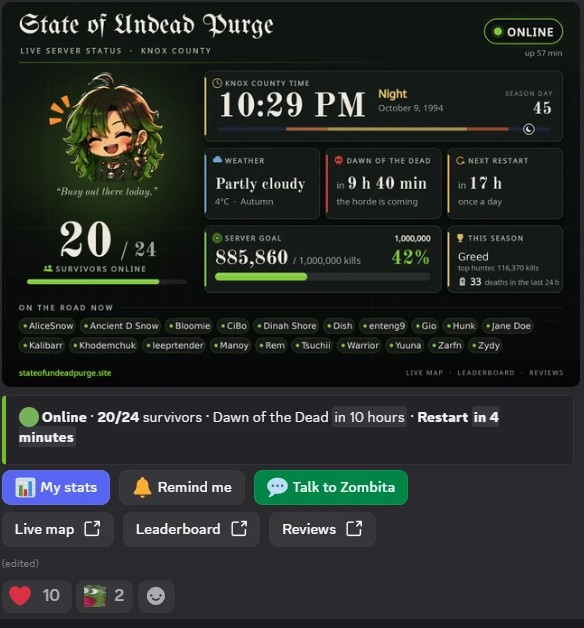

World events
Events and more. Dawn of the Dead horde nights, boss zombies such as The Bride, The Halfbie and the Hazmat Boss, Queen Dusk who speaks to players and sends hordes after them, notoriety and bounties, bus travel between 23 stations, and a live 2D/3D web map. Players film the boss fights themselves and post them on the server's Clips page.
Treasure hunt. Teams follow calls and clues across the map, and each player's in-game phone shows a QR code that opens puzzles on their real phone. The QR encoder is written in Kahlua, which has no bit operators.



Bosses




A job that went wrong
The bandits in this clip came from another modder's Bandits mod. I have since taken it off the server and am replacing it with my own NPC System. That works on multiplayer, which another admin and I tested together on a test server, but it stays off on the live server while it is in testing.
Queen Dusk's marks

